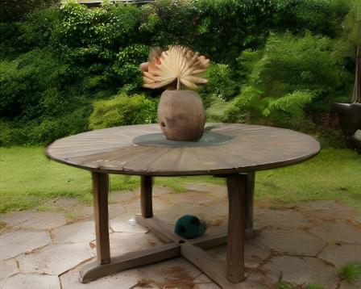
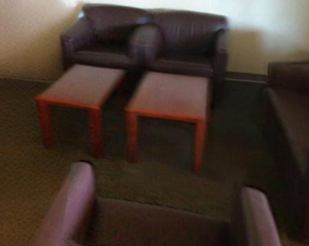
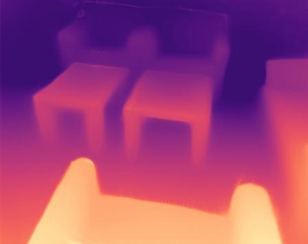
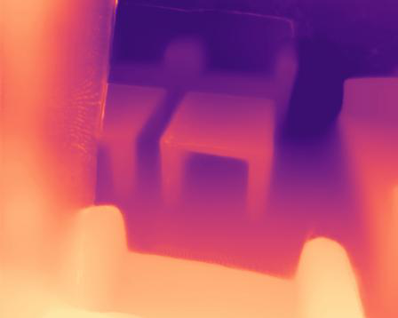
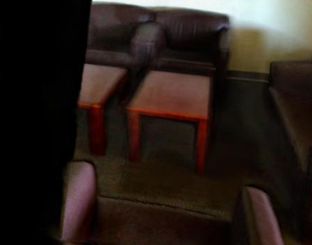

Leveling3D
简单摘要
这项工作的核心问题可以概括为：前馈 3D 重建彻底改变了 3D 视觉，为下游任务（例如使用 3D 高斯分布进行新颖视图合成）提供了强大的基线。
其关键方案可以总结为：以前的作品探索使用扩散模型修复损坏的渲染结果。从机制上看，最重要的设计是：然而，他们缺乏几何关注，无法填充外推视图上的缺失区域。
在训练与推理层面，主要关注点是：在这项工作中，我们引入了 Leveling3D，这是一种新颖的管道，它将前馈 3D 重建与几何一致生成相结合，以实现整体同步重建和生成。
从实验结果可以读出的主要信号是：我们提出了一种几何感知的调平适配器，这是一种轻量级技术，可将扩散模型中的内部知识与前馈模型中的先验几何结构对齐。


简而言之，这篇论文关注的核心是：这项工作的核心问题可以概括为：前馈 3D 重建彻底改变了 3D 视觉，为下游任务（例如使用 3D 高斯分布进行新颖视图合成）提供了强大的基线。 其关键方案可以总结为：以前的作品探索使用扩散模型修复损坏的渲染结果。 从机制上看，最重要的设计是：然而，他们缺乏几何关注，无法填充外推视图上的缺失区域。 训练或推理层…
这项工作的核心问题可以概括为：3D 重建是增强/虚拟现实、自主系统和数字孪生应用的基石技术。
其关键方案可以总结为：依靠运动结构 (SfM) 和多视图立体 (MVS) 的传统管道通过迭代优化实现了卓越的精度，但仍然面临计算复杂性和无纹理区域性能脆弱的问题。
从机制上看，最重要的设计是：最近向前馈方法的范式转变彻底改变了这一领域，通过使用大量数据训练前向传递深度网络来实现实时、可泛化的 3D 重建。
在训练与推理层面，主要关注点是：MASt3R 和 VGGT 等强大的基线在联合相机姿势和密集几何预测方面表现出了前所未有的能力，为下游任务，特别是新颖的视图合成（NVS），先于稳健的几何奠定了坚实的基础。。
从实验结果可以读出的主要信号是：尽管最近取得了进展，但当输入视图稀疏时，前馈 3DGS 仍然从根本上限制了外推视图渲染。
核心创新
1）问题定义与研究动机
综合引言与方法部分，这篇论文的核心创新可以概括为以下几方面：。这项工作的核心问题可以概括为：3D 重建是增强/虚拟现实、自主系统和数字孪生应用的基石技术。
其关键方案可以总结为：依靠运动结构 (SfM) 和多视图立体 (MVS) 的传统管道通过迭代优化实现了卓越的精度，但仍然面临计算复杂性和无纹理区域性能脆弱的问题。
从机制上看，最重要的设计是：最近向前馈方法的范式转变彻底改变了这一领域，通过使用大量数据训练前向传递深度网络来实现实时、可泛化的 3D 重建。
在训练与推理层面，主要关注点是：MASt3R 和 VGGT 等强大的基线在联合相机姿势和密集几何预测方面表现出了前所未有的能力，为下游任务，特别是新颖的视图合成（NVS），先于稳健的几何奠定了坚实的基础。。
从实验结果可以读出的主要信号是：尽管最近取得了进展，但当输入视图稀疏时，前馈 3DGS 仍然从根本上限制了外推视图渲染。
2）方法框架与核心模块
这项工作的核心问题可以概括为：初步前馈 3D 高斯泼溅。
其关键方案可以总结为：前馈 3D 重建已成为按场景优化的强大替代方案，可在单次前向传递中实现可概括的新颖视图合成。
从机制上看，最重要的设计是：在这里，我们利用 AnySplat（一种前馈 3DGS 模型）作为我们的基线。
在训练与推理层面，主要关注点是：给定视图图像，其中 3D 场景，从 VGGT 中提取，来自 AnySplat 的几何编码器首先聚合来自多视图输入的标记。
3）实验设计与工程价值
从实验结果可以读出的主要信号是：使用相应的标记，摄像头生成姿势 ，深度头生成每像素深度图 和置信度图。
这项工作的核心问题可以概括为：我们从 DL3DV（10,510 个场景）和 ScanNet++（1,006 个场景）生成训练数据，随机选择 80% 的场景来生成 100,000 个噪声干净的图像对。
其关键方案可以总结为：所有基线都在未见过的数据集上进行测试。
从机制上看，最重要的设计是：MipNeRF360 和 VRNeRF 用于新颖视图合成，TartanAir（合成室内/室外）和 ScanNet（真实世界室内）用于新颖视图深度估计。
在训练与推理层面，主要关注点是：我们使用通用指标（例如 NVS 的 PSNR、SSIM 和 LPIPS）进行所有实验。
从实验结果可以读出的主要信号是：在深度估计方面，我们使用 Abs Rel、RMSE、following ，并进一步应用 Met3R 进行生成多视图 3D 一致性评估。
技术细节
下面按照论文的方法章节结构展开，重点说明模型的关键模块、公式设计和训练策略。这项工作的核心问题可以概括为：初步前馈 3D 高斯泼溅。其关键方案可以总结为：前馈 3D 重建已成为按场景优化的强大替代方案，可在单次前向传递中实现可概括的新颖视图合成。从机制上看，最重要的设计是：在这里，我们利用 AnySplat（一种前馈 3DGS 模型）作为我们的基线。在训练与推理层面，主要关注点是：给定视图图像，其中 3D 场景，从 VGGT 中提取，来自 AnySplat 的几何编码器首先聚合来自多视图输入的标记。从实验结果可以读出的主要信号是：使用相应的标记，摄像头生成姿势 ，深度头生成每像素深度图 和置信度图。这条公式用于定义模型中的核心计算关系：左侧给出目标量，右侧由输入与参数共同决定。阅读时可先关注 I_i、i、N、r 的物理/几何含义，再看它们如何影响训练目标或渲染结果。这条公式用于定义模型中的核心计算关系：左侧给出目标量，右侧由输入与参数共同决定。阅读时可先关注 C、x_p、i、K 的物理/几何含义，再看它们如何影响训练目标或渲染结果。这条公式用于定义模型中的核心计算关系：左侧给出目标量，右侧由输入与参数共同决定。阅读时可先关注 Z、N、I 的物理/几何含义，再看它们如何影响训练目标或渲染结果。这条公式用于定义模型中的核心计算关系：左侧给出目标量，右侧由输入与参数共同决定。阅读时可先关注 L、E、Z、C 的物理/几何含义，再看它们如何影响训练目标或渲染结果。这条公式用于定义模型中的核心计算关系：左侧给出目标量，右侧由输入与参数共同决定。阅读时可先关注 F、i、C 的物理/几何含义，再看它们如何影响训练目标或渲染结果。这条公式用于定义模型中的核心计算关系：左侧给出目标量，右侧由输入与参数共同决定。阅读时可先关注 C、Q、K、V 的物理/几何含义，再看它们如何影响训练目标或渲染结果。把全文方法串起来看，这篇论文的逻辑基本都遵循同一条主线：先把输入组织成更容易处理的表示，再通过模型结构和损失函数把这个表示推向目标输出，最后用可视化与数值实验共同证明该设计有效。
$$ f_{\boldsymbol{\theta}}:\{I_i\}_{i=1}^N \;\mapsto\; \Bigl\{ \boldsymbol{\mu}, \sigma, \boldsymbol{r}, \boldsymbol{s}, \boldsymbol{c} \Bigr\}^\mathcal{G} \cup \{p_i\}_{i=1}^N. $$
$$ \mathcal{C}(x_p) = \sum_{i\in K} \mathbf{c}i \alpha_i \prod_{j=1}^{i-1}(1 - \alpha_j), \; \alpha_i=\sigma_i\mathcal{G}^\prime(x_p) $$
$$ \mathbf{Z}_t = \sqrt{\bar{\alpha}_t} \mathbf{Z}_0 + \sqrt{1 - \bar{\alpha}_t} \boldsymbol{\epsilon}, \quad \boldsymbol{\epsilon} \sim \mathcal{N}(\mathbf{0}, \mathbf{I}) $$
$$ \mathcal{L} = \mathbb{E}_{\mathbf{Z}_t,\mathbf{C}, t, \boldsymbol{\epsilon}} \left[ ||\boldsymbol{\epsilon} - \boldsymbol{\epsilon}_\theta(\mathbf{Z}_t, \mathbf{C})||_2^2 \right], $$
$$ \hat{\mathbf{F}}_{\text{enc}}^i = \mathbf{F}_{\text{enc}}^i + \mathbf{F}_c^i, \; \text{for } i \in {1,2,3,4}, \; \mathbf{F}_c = \mathcal{F}_{AD}(\mathbf{C}) $$
$$ \begin{split} \mathbf{C}_{res} &= \text{Unpatch}\bigl( \text{Attention}(\mathbf{Q}, \mathbf{K}, \mathbf{V}) \bigr) \end{split} $$



实验结论
实验部分主要回答两个问题：第一，方法是否真的优于已有基线；第二，这种优势来自哪一个设计决策。
这项工作的核心问题可以概括为：我们从 DL3DV（10,510 个场景）和 ScanNet++（1,006 个场景）生成训练数据，随机选择 80% 的场景来生成 100,000 个噪声干净的图像对。
其关键方案可以总结为：所有基线都在未见过的数据集上进行测试。
从机制上看，最重要的设计是：MipNeRF360 和 VRNeRF 用于新颖视图合成，TartanAir（合成室内/室外）和 ScanNet（真实世界室内）用于新颖视图深度估计。
在训练与推理层面，主要关注点是：我们使用通用指标（例如 NVS 的 PSNR、SSIM 和 LPIPS）进行所有实验。
从实验结果可以读出的主要信号是：在深度估计方面，我们使用 Abs Rel、RMSE、following ，并进一步应用 Met3R 进行生成多视图 3D 一致性评估。

- 方法在核心指标上的优势与结构设计和训练目标直接相关；
- 消融实验表明，拿掉关键模块后性能与结果质量都有明显回落；
- 论文不仅比较数值，也关注可视化质量、稳定性和泛化能力等更贴近真实使用的信号。
理解评价
这项工作的核心问题可以概括为：在这项工作中，我们提出了 Leveling3D，这是一种新颖的框架，它将前馈 3D 重建与 2D 扩散模型连接起来，以实现同步 3D 重建和生成。
其关键方案可以总结为：我们的几何感知调平适配器经过调色板过滤策略的训练，可以有效地将扩散先验与几何控制对齐，以填充缺失区域并增强从约束不足的 3D 表示中渲染的新颖视图，同时测试时掩模。
从机制上看，最重要的设计是：重要的是，与之前的方法不同，我们的细化流程将增强的视图反馈到重建中，从而提升 3D 表示的水平。
在训练与推理层面，主要关注点是：这个统一的框架在公共数据集的新颖视图合成和深度估计方面实现了最先进的性能。
如果把它当成研究参考，建议重点关注三件事：第一，这套方法真正依赖的归纳偏置是什么；第二，实验中真正拉开差距的模块是哪一个；第三，它的局限究竟来自数据、算力还是监督信号本身。
以下相关论文可以作为进一步追踪的入口：。未来可以从数据覆盖、训练效率与跨场景泛化三个方向继续改进，以提升稳定性与可部署性。